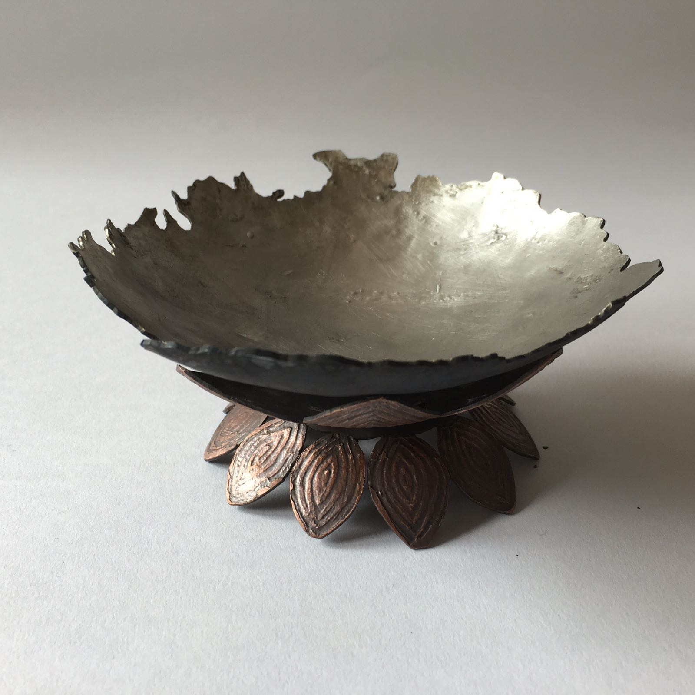
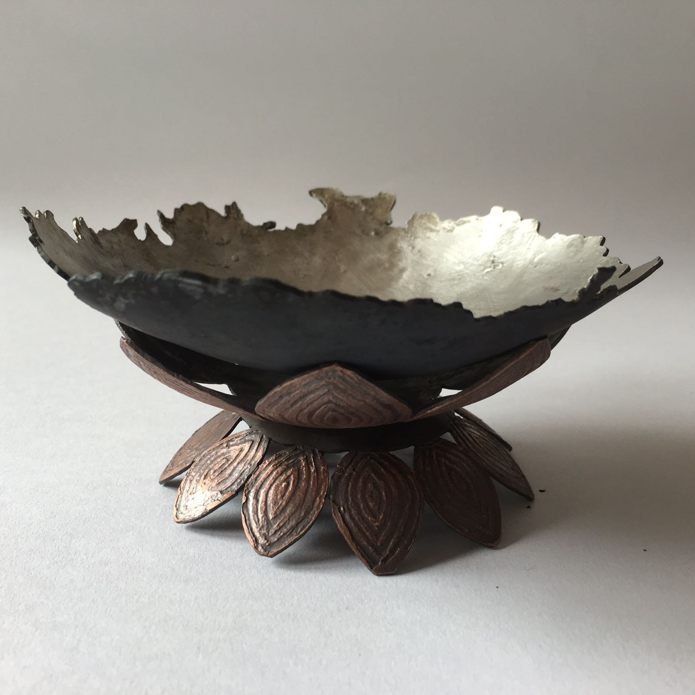
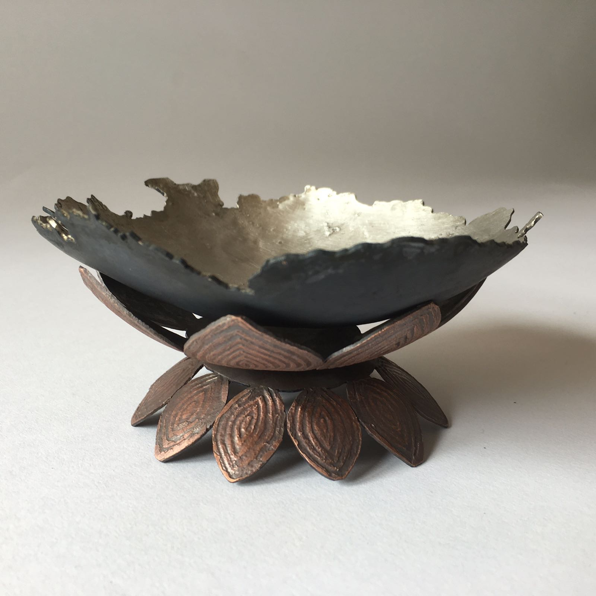
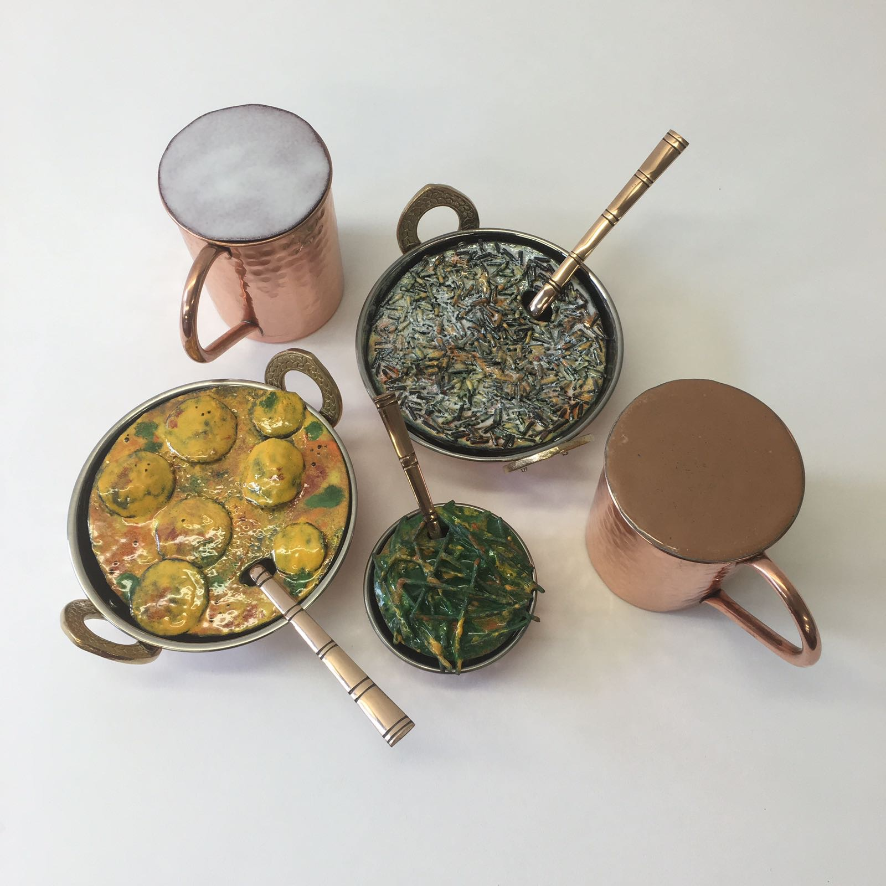
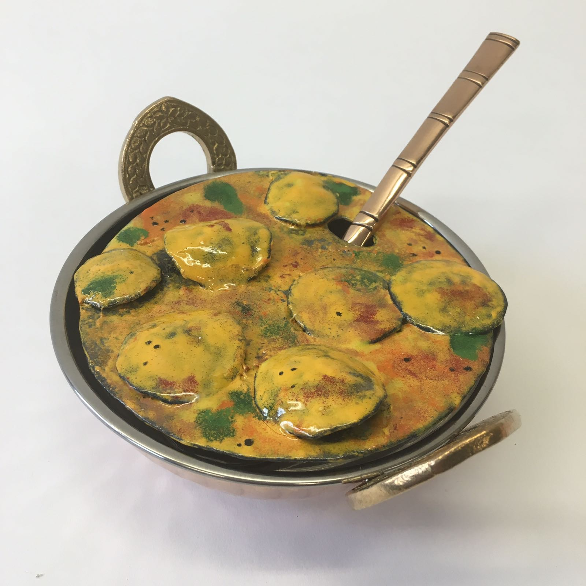
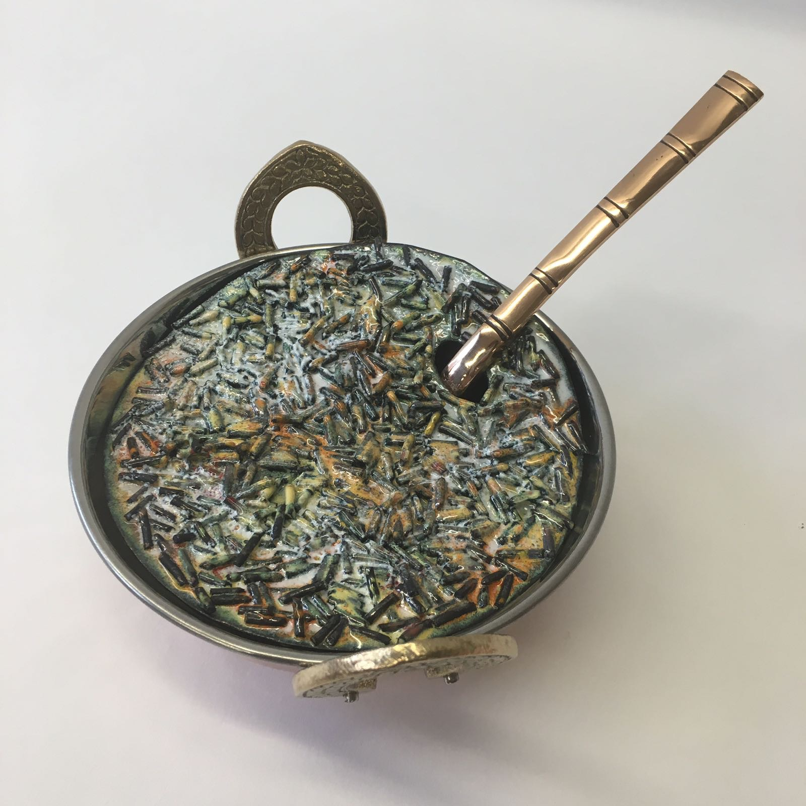

This vessel is made of copper in three separate pieces. It is inspired by my home country-India. The bottom two pieces of the vessel are raised, pierced and etched pieces of copper that represent the national flower of India- the Lotus. The top piece is pierced with an abstracted version of the map of India. It is tinned on the inside and colored black on the outside. Each of these pieces is removable for easy packing.
  This series represents my favorite foods from home. There are a total of five dishes here- bhindi, kaddhi, biryani, chai and lassi. They have all been enamelled onto copper disks over layers of layers. The cutlery and vessels were not made by me. I named this series Khaana Banana because in Hindi this means making food, and I wanted to take about the process of making my favorite foods in my favorite medium- metal.
  